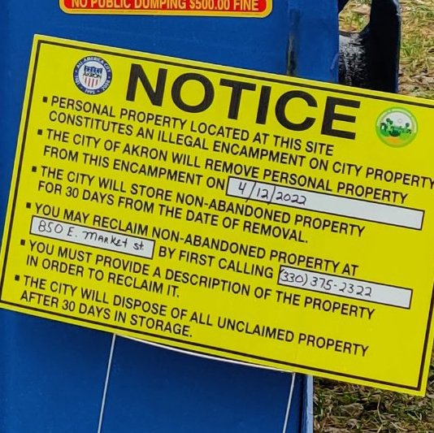

Timeline photos
The City of Akron posted this sign on my dumpster that was on their land. It said that they were removing the dumpster today, 4/12/2022.
But they actually removed the dumpster 4/11/2022 at 11:30am.
It's one thing to bully a homeless person by stealing their things. But stealing 2 dumpsters from a large dumpster company seems a little risky.
I'll let you know what comes of that. This could be fun.